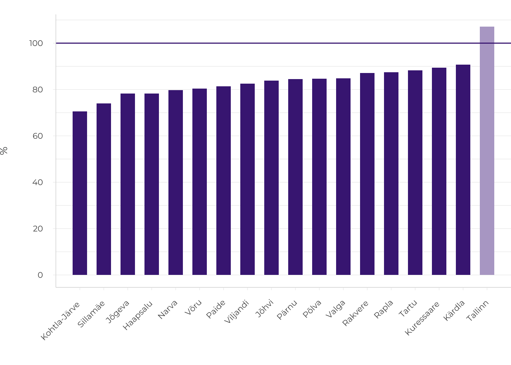

Introduction
Diversity in the Estonian living environment
- A minimal network of local and regional centres should be agreed and maintained in Estonia to enable living anywhere in the country, including in peripheral regions.
If most of the cities and towns continue to shrink, it will not be possible to live in all Estonian regions in the future. It is not only rural areas that are threatened by peripheralisation; basic services are also disappearing from county towns and even regional centres are shrinking. In addition, the stigmatisation of rural life will exacerbate peripheralisation.
- The remote towns and regions of Estonia are in a double periphery. A coherent, domestically and internationally well-connected settlement system would help to overcome this.
The peripheries of Estonia are far away from the country’s major cities as well as from European core areas. The international mega-infrastructure projects that are currently planned can alleviate the situation, but only if they also connect the peripheral regions. A car-only mobility model is inadequate to connect such places; it makes some people mobile, but isolates others (such as the elderly, young people and children).
- Suburban and rural lifestyles need rethinking. The ongoing urban sprawl and shrinkage processes reduce the diversity of the Estonian living environment.
Unplanned suburban development prevents the creation of good public space in the cities and at the same time ignores the need for common public space in the suburbs. The preservation of natural and cultural landscapes is not systematically considered in the suburbs. In shrinking rural settlements, there are fewer and fewer people whose lifestyle directly reproduces traditional natural and cultural landscapes.
Points of departure
In this chapter, we extend the concept of public space to the entire Estonian settlement system by observing the quality of the living environment of Estonian people in different parts of the settlement system. One of the key concepts in this chapter is the diversity of living environments – for a relatively small population and territory, the choice of living environments in Estonia is diverse and this is a value in itself. By treating the settlement system as public space, we are referring to the right to space – the opportunity for all people to choose between a variety of living environments so that the main services and benefits are accessible in their preferred place of residence. In a democratic society, every region should have two important features: accessibility and connectivity.
For a relatively small population and territory, the choice of living environments in Estonia is diverse and this is a value in itself.
In Estonia today, both the living environments both lifestyles are becoming increasingly uniform. Over the past three decades, natural and cultural landscapes have been threatened by intensive construction on agricultural land, scrub overgrowing arable land and increasingly intensified logging. The meaning of rural and urban has changed. As many urban people prefer to live in a less dense environment, hybrid forms of urban-rural landscape have emerged around the cities. Over the past three decades, the working-age population throughout the settlement system has predominantly migrated towards larger centres, where higher education institutions and jobs are concentrated. Agricultural employment has been declining and fewer and fewer people are engaged in the activities that have historically shaped rural landscapes.
Increasing car use and a good road network have made people more mobile, reducing the perceived distances between places. This will benefit those who take car use for granted, while for other groups dependent on public transport (the elderly, children and young people), the car-based mobility model is an unfavourable trend. Changes in the geographical location of economic activities and the shrinking network of local and regional centres have increased the need for mobility. The opportunities to choose between living environments are limited by the availability of jobs and basic services in the vicinity of the place of residence. While three decades ago most rural jobs were in the centres of collective farms, which also served as primary service centres, today living away from major cities mostly means long-distance commuting, because many functions (schools, medical care and other daily services) have disappeared even from the county towns.
Increasing car use and a good road network have made people more mobile, reducing the perceived distances between places. This, however, is an unfavourable trend for those who depend on public transport, for example, the elderly and young people.
The decline of rural areas is a pan-European trend (ESPON 2017; Hörnström and Perjo 2015; Leick and Lang 2018). This vicious cycle is difficult to break: as people leave the area after losing their jobs, the lack of a critical mass of consumers for services also causes a reduction of service jobs, and as a result, the pressure to close down vital daily services increases. This has also been the case in Estonia. The agricultural boom towards the end of the Soviet era was the golden age for rural regions and remote small towns (Marksoo 1985). Since then, young people who have grown up in the periphery have started to study and work in major cities (Leetmaa and Väiko 2015) or outside Estonia (Tiit 2015), and there are fewer reasons to return home. The shrinkage of peripheral regions has been particularly sharp in the countries of Central and Eastern Europe. While the population decreased in the rural municipalities of the EU-15 Member States by slightly more than 35% in the period 2001–2011, in the new EU Member States, the share of declining municipalities was on average 60%, in the Baltic States even more than 80% (ESPON 2017).
Shrinkage is not only a concern for remote rural areas, it is also affecting towns in the periphery, and in the long run entire regions are shrinking (ESPON 2017). In Estonia, too, the gradual emptying of the lower levels of the settlement system can be observed. Currently, there are only two cities with increasing population in Estonia, the capital city Tallinn and its small satellite town Saue. All county towns as well as regional centres are losing population (Figure 1.0.1).
Figure 1.0.1. Population change in Estonian county towns, 2000–2017, population as of 1 January 2000 = 100%

Source: Statistics Estonia 2000; 2018.
A shrinking network of local centres starts to limit the opportunities for living in more remote areas. A network of centres traditionally operates hierarchically: daily services should be available in centres close to where people live, other services that people need less frequently should be present in larger centres that people may also visit regularly. If the daily activities of a family can be accomplished within a reasonable distance from home, there is no need to leave the region permanently. By its very nature, commuting is a substitute for out-migration – although time-consuming and costly, and wasteful of natural resources, it prevents the periphery from extreme shrinkage. The principle that centres are necessary to serve the surrounding regions has been followed in the Estonian county-level spatial plans (A guide for defining centres and functional zones in county spatial plans 2013). In cooperation with the Ministry of the Interior (Tõnurist et al. 2014) Statistics Estonia has proposed a network of local centres and respective catchment zones that should be maintained in order to avoid further shrinkage in peripheral regions.
By its nature, commuting is a process that substitutes out-migration and prevents the extreme shrinkage of more remote places.
In 2000, Ahas et al. proposed the idea of Estonia as a ‘scattered city’. The vision for Estonia as a scattered city (or ‘low-density urbanised space’) is also discussed in detail in the current national spatial plan Estonia 2030+ (effective as of 30 August 2012, action plan updated 9 October 2014). According to this vision, all locations in Estonia could be well connected with each other and to the outside world, ‘to ensure that any settled location in Estonia is liveable’ (Estonia 2030+, p. 13). The national plan also emphasises the system of functional areas (catchment zones) and centres as a spatial model, assuming that this network provides ‘services at a good level, jobs creating high added value and competitive education’ (ibid., p. 14). The position of the national plan regarding the differences between urban and rural lifestyles is less clear. It has been said that ‘urban lifestyle prevails also in the countryside’, but at the same time, no solution has been proposed for urban life in the countryside to allow the long-term preservation of the spatial values of rural landscapes.
The vision of a ‘scattered city’ is a model for the settlement system where all diverse regions across the country are well connected with each other and to the outside world.
Population data over recent decades demonstrates that instead of the proposed scattered settlement model, the population has consistently concentrated in large urban areas. Dispersal processes are visible only within urban regions, from cities to suburban zones. For example, between the two last censuses (1989–2000), approximately 34,700 people settled from elsewhere in Estonia in the capital city region; in the following decade, 2000–2011, this number was already 51,000. Nearly 23,000 people moved in the opposite direction, from the Tallinn urban region to the rest of Estonia in the 1990s; in the 2000s nearly 20,000 people. At the same time, the number of movers from Tallinn to its suburbs doubled in 2000 (nearly 34,000) compared to the 1990s (approximately 17,000) (Leetmaa and Väiko 2015). More recent data confirms that the trend has continued: in 2018 alone, 5,259 people left Harjumaa county for the rest of Estonia, and 7,899 moved from the rest of Estonia to Harjumaa in the same year. In recent years, approximately 4,500–5,000 people have left Tallinn for suburban municipalities in Harjumaa, and about 3,000 have moved in the opposite direction (Statistics Estonia 2015; 2016).
Articles in this chapter
In what follows, I will summarise the topics and key messages of the articles in this chapter. The first topic discussed is regional polarisation – the exclusion of peripheral regions from the economic success of the country over the past few decades. Bianka Plüschke-Altof, Bradley Loewen and Kadri Leetmaa, and Tõnu Oja in their articles show that the population has grown only in the Tallinn urban region in recent decades. They point out that this has been indirectly leveraged by EU funding, the distribution of which has not favoured the peripheral regions. Anneli Kährik and Annika Väiko show that the subsidies for renovation issued by the KredEx foundation have also long been distributed in favour of wealthier regions (see also Lihtmaa et al. 2018).
Their analysis reveals that most people in Estonia live in housing that needs modernisation. The majority of Estonian housing stock originates from the Soviet era. In wealthier urban areas, people have been able to improve their living conditions more often, but in the context of a free housing market, there are many people in difficult economic conditions in both central and peripheral areas who are unable to invest in housing. In the capital city region with high real estate prices, even young middle-income households find it difficult to enter the housing market. At the same time, there is a surplus of housing in peripheral towns, but there is almost no new modern housing (e.g. rental apartments). It is noteworthy, according to the articles by Kährik and Väiko, and Roose, that good living conditions in terms of modern housing do not always coincide with good-quality public space, pleasant natural environment and accessibility.
Good living conditions in terms of modern housing do not always overlap with areas with nearby good public spaces, pleasant natural environment and accessibility.
Connections to larger centres with more functions and diverse services are vital for living in the peripheral regions of the country. The article by Tauri Tuvikene, Merlin Rehema and Dago Antov gives an overview of transportation problems in low-density areas. Many people in the rural areas find themselves in the situation where there are increasingly less services and jobs in the nearby centres, while at the same time the public transport routes and schedules do not allow them to rely on public transport. As a result, the private car (as in sparsely populated Nordic countries – Velaga et al. 2012) plays an increasing role in the mobility of people living in remote districts. The shrinking population and the increasing use of cars, in turn, hinder the operation of regular public transport. However, the car-only mobility model isolates people who do not drive themselves, such as the elderly.
Plüschke-Altof and others argue that peripheralisation is both an objective process of the concentration of the economy and population in the central regions and depopulation in the peripheral regions, as well as a subjective thought pattern in the minds of residents, opinion leaders and decision-makers. While the Estonian Human Development Report 2016/2017 emphasised the parallel societies of Estonian- and Russian-speaking people in Estonia, the gap between the capital city region and the rest of Estonia is no smaller. Plüschke-Altof et al. explain that rural areas are often either ‘invisible’ to the wider public or have a reputation as a ‘backward region’. Paradoxically, negative stories about the periphery are created by an (urban) elite who may not have direct contact and experience with these regions. Stigmatisation is exacerbating objective peripheralisation, in the longer perspective also impacting investment decisions and residential choices (Miggelbrink and Meyer 2015).
Another key topic that the articles in this chapter elucidate is the planning issues related to suburbanisation. Roose in his article estimates the population of the new suburbs in the Tallinn, Tartu and Pärnu urban regions to be around 130,000 (one tenth of the Estonian population). Oja shows that from the beginning of the century (a period of rapid suburbanisation) the share of built-up land in Estonia has increased by about 1.3‰. It is noteworthy that this newly built-up land is not reversible to its former (agricultural) land use. Current construction activity on suburban land in Estonia is driven mainly by demand for new housing and by private interests rather than the conscious planning of green areas, landscapes and farmland. As a result, fragmented land use patterns have emerged in suburban areas.
Tuvikene and co-authors emphasise that the suburbs of Estonia are extremely car-centred. As with peripheral areas, the car-only mobility model makes some people mobile and others less mobile. For example, children in suburban households typically depend on parents to transport them. Car-based mobility is also inappropriate for the elderly, and they form a significant share of the population in suburban areas (e.g. in former summer cottage districts). Tuvikene and co-authors argue that car dependency in suburban neighbourhoods could be avoided with a sensible combination of urban and suburban planning: cities should not plan their public space according to the needs of suburban residents (such as comfortable parking or wider streets for cars).
Roose’s article focuses on suburban public space. There are few social interaction sites outside private plots in suburban settlements. Unless the local government deliberately aims to create good-quality public space in the planning process, it is usually not created on the initiative of private developers and individual owners. Although many new bicycle and pedestrian paths have been recently built around the city with the support of EU funds, the spatial organisation of expanded suburban areas (road network, green areas, public space, public transport) does not connect the new and former settlement structure. At the end of the Soviet era, attention was also paid to the architecture and public space of the central settlements of collective farms in rural districts. In the three decades since Estonia regained its independence, the urban planning and architectural design of suburban centres has not yet become significant.
The diversity of living environments requires maintaining differences between urban and rural areas and preserving natural and cultural landscapes.
The third topic highlighted in the chapter is the preservation of the diversity of the living environment in Estonia – urban-rural differences and diverse natural and cultural landscapes. Oja’s analysis points to the increasing uniformity, or convergence, of landscapes. The 1990s were marked by farmland becoming rapidly overgrown with scrub; in the following decades this process has somewhat slowed down. Recently, there has been active public debate about the volumes of timber being felled. According to land cover data, forests in Estonia are gradually becoming younger and the share of coniferous forests is decreasing. Land use changes are evident around cities, where built-up areas are rapidly expanding. Suburban developments in Estonia tend to be fragmented (see Roose, this report), meaning that the natural and cultural landscapes in major urban regions have been rather wastefully handled. Oja also analyses current measures that should preserve the diversity of the living environments both in the periphery and in the suburbs: the management of nature protection in nature reserves, planned green networks, county-level plans for valuable arable lands and valuable landscapes.
In conclusion, all the articles in this chapter call for reflection on the diversity of Estonian living environments as a value in itself. All living environments do not need to be similar, but large differences in living conditions, access to basic services and mobility could be the issues where the state systematically intervenes to ensure the agreed service level to all regions. The landscapes created by the interaction of people and nature are inevitably changing. However, change can also be managed, especially for irreversible processes such as the loss of arable land, valuable landscapes or biodiversity. These are values that have hitherto been linked to the rural environment.
Estonia in the international context
In the European and global context, Estonia is a sparsely populated peripheral country. Our peripheral regions also constitute a geographical double-periphery – far from major Estonian cities and poorly connected to European core areas. In comparison, a typical shrinking region in the Netherlands will have millions of jobs located within a half-hour train journey. The Baltic States and the Scandinavian countries are generally sparsely populated, and it is therefore natural that the larger cities are quite far apart in travelling time from each other. Of course, this also sets limits on economic development. Pan-European infrastructure projects (Rail Baltica, an undersea tunnel, better flight connections) linking the larger cities of the macro-region could potentially provide the Baltic Sea region with more employment and business opportunities.
Compared to the densely urbanised areas of Central Europe, northeast America and elsewhere, Estonia is rich in green areas. We take access to greenery and wildlife for granted while also valuing our natural areas. This is also one of the reasons why public opinion is particularly attentive and sensitive to the expected environmental impacts of planned mega-projects. Both of the following aspects are important for the spatial development of Estonia: the preservation of natural values and our connectivity with the main global and European economic centres. However, in the planning of large infrastructure projects, it is important to prevent increased regional disparities and further peripheralisation of remote regions. All of Estonia, including the periphery, should benefit from the new international connections. Along with investing in major international projects, connections between peripheral regional centres and the major national transport hubs should improve. In other words, it is unreasonable to invest huge public resources in international projects if as a result there will be a shortage of funds to make new connections available for the peripheral regions, which will at least face the loss of natural landscapes. The concept of an internally well-connected scattered city proposed by the Estonian national spatial plan would only be realistic if the smaller Estonian towns were to be connected to the international networked economy, rather than fading as administrative centres and only providing local services.
Our peripheral regions also constitute a geographical double-periphery – far from major Estonian cities and poorly connected to European core areas.
In global and European comparisons, our cities are also rich in nature and biodiversity. Even the large housing estates in our cities are sparsely built according to land cover data (Oja, this report), with ample free space between buildings. With regard the amount of greenery, the wooden houses of inner-city districts in Tallinn and Tartu resemble rural settlements or small towns more than dense urban environments (Kährik et al. 2016). Urban gardening and urban environmental movements have become important in urban planning. It follows that natural and low-intensity urban space is considered a normal thing in Estonia. As the population in most Estonian cities is shrinking, it is only a matter of time before the principles of urban planning for shrinking cities (Hörnström and Perjo 2015; Pallagst et al. 2017) will be applied in the strategic and spatial planning of our small towns, county towns and regional centres. So far, only the city of Valga has dared to abandon the growth rhetoric and has set itself the goal of planning a shrinking city (Tintera 2019).
Although Estonian cities are rather sparse and green, suburbanisation is also commonplace. An important factor contributing to suburbanisation is the relatively poor living conditions in Estonian cities (Kährik and Väiko, this report), which is why modern housing is being built both in and around the cities. In the new suburbs outside the city border, both public transport and the design of public space has taken a back seat. In European cities, new suburban developments are predominantly located near major public transport routes. As a tacit social agreement, in Estonian society the rights of individual owners have always been considered as a high priority – this also transfers to spatial planning. So far, home owners and small developers have been the main actors in suburban housing construction in Estonia. With these actors, and with the good will of cooperation, good local spatial solutions could be developed. In many cities around the world, international developers, as well as financial investors who often remain anonymous to local governments, play an important role in the housing market (Bernt et al. 2017; Watt and Minton 2016). In the future, our urban planners should also prepare for this global trend.
In the new suburbs outside the city border, both public transport and the design of public space has taken a back seat. In European cities, new suburban developments are predominantly located near major public transport routes.
The spatial model of a scattered city in the Estonia 2030+ national spatial plan is, in the international context, Estonia’s own way forward. In most cases, research literature contrasts disperse settlement structures with compact cities – the latter being seen as more resource efficient (Owen and Herlin 2009). In the Nordic countries, where sparsely populated areas are also common, efforts have been made to develop appropriate service models. For example, it is considered that the ageing population in the periphery needs tailored services that, in places with a high proportion of the elderly, cannot be left solely to the municipalities where many elderly live (Hörnström and Perjo 2015).
So far, however, we do not have the monitoring indicators to measure the progress of the scattered city envisaged in the national spatial plan and its various elements. According to population statistics, in addition to urbanisation (movement towards central regions), counter-urbanisation (migration from large urban regions to smaller ones) is a smaller trend; for example, in 2018, 5,259 people left Harjumaa county to live in other Estonian counties. People in the later stages of their working lives and the elderly, who often return to where they came from or settle permanently in their former summer homes, are more likely to make such moves, but in some cases younger households are also (re)discovering rural areas and small peripheral towns (Leetmaa and Väiko 2015). In many cases, the benefits of combining a main urban and temporary rural home are also utilised. At the end of the 2000s, approximately 5% of the Estonian population changed their place of residence seasonally (Silm and Ahas 2010). As out-migration has already taken place for decades, there are farms and houses in the countryside as likely locations to settle permanently or seasonally. Often, people return to places they have had a connection with from earlier in their life. The visibility and image of the place also determines the choice of destination, the most popular are the islands, coastal areas, culturally interesting places. Although the spatial model of a scattered city is conceptually emphasised in the national spatial plan, there is no consensus on how rural values, lifestyles and landscapes should survive when the urban life style becomes predominant in rural regions. There is currently no data on the extent to which people migrate to rural areas only to avail themselves of a picturesque milieu and who is (re)creating the rural living environment and how.
How do we move forward?
The vision of the Estonia 2030+ national spatial plan to take advantage of the diversity of living environments in the country and make it a well-functioning scattered city has not yet been realised in practice. Until now, the settlement system in Estonia has been dominated by urbanisation (migration towards larger urban regions). Since the 1980s, when Soviet agriculture favoured rural life, the lower levels of the settlement system have gradually declined. Theoretically, these trends could only be reversed if external factors were to make agriculture or other rural activities significant again, such as when climate change significantly increases the value of arable land in temperate climate zones. In the meantime, the peripheral regions and towns of Estonia need to find a realistic niche to stabilise their population and prevent economic activity from further shrinking.
The vision of the Estonia 2030+ national spatial plan to take advantage of the diversity of living environments in the country and make it a well-functioning scattered city has not yet been realised in practice.
The alternative is continued decline over the coming decades. This, however, would call into question the deep-rooted position in our legal system that people should have the opportunity to live in all Estonian regions. Article 34 of the Estonian Constitution states: ‘Everyone whose presence in the Estonia territory is lawful has the right to move freely in that territory and to choose freely where to reside.’ In the national spatial plan Estonia 2030+, the development objective is ‘to ensure that any settled location in Estonia is liveable’. Local governments have a duty to provide school transport for children from all homes, regardless of their location. The disappearance of permanent settlements from peripheral regions is considered in the political rhetoric as a threat to national security. As the current spatial development trends will continue for decades to come and the network of local centres will gradually fade, sooner or later we will need to ask ourselves whether we can keep up the task of providing connectivity and basic services in every remote village.
The stability of regions far from larger cities can only be ensured by maintaining a nationwide network of county towns and smaller service centres. The most important basic services in peripheral and declining regions are education and health (Boncinelli et al. 2015). In all Estonian functional areas (with respective centres) (Tõnurist et al. 2014), it is necessary to agree on minimum service levels across sectoral policies, so that centres are not weakened by the excessive rationalisation of one or another policy area that does not take into account regional differences. Effective regional policy must have a redistributive component. In the coming years, when the new financial period of the European Union 2021–2027 begins, the current regional distribution of the cohesion funding grants could be critically reviewed. A good example is the KredEx housing renovation subsidies, which for a long time, competitively distributed, supported mainly Tallinn and Tartu urban regions, but have recently deliberately started to favour less developed regions as well. In shaping the future regional policy objectives, the pre-EU regional policy programmes and target areas of Estonia (see the Estonian Regional Policy Concept 1994 and the Estonian Regional Development Strategy 1998) could be brought back to the discussion. In the latter, a clearer direction was taken to support less developed regions, even if there was significantly less money for regional policy at that time. In the early 2000s, for example, an Estonian national regional policy programme addressing the network of local centres was also working for a short time.
Effective regional policy must have a redistributive component.
The most important sectoral policy with a regional impact is transport policy and policy covering other connections between different regions. It is not sufficient just to link the capital city to Europe, good connections between cities and local centres within the country are also needed. The internet has been present in Estonia for more than a quarter of a century; in the next twenty-five years, the connection speeds and digital solutions could allow unrestricted remote work all over the country. A well-connected scattered city could potentially offer people the opportunity to do some work on the train, on the bus, and why not in a self-driving car. In addition, this spatial model for the future could allow people to choose when they want to be connected and accessible to everyone, and when to enjoy the luxury of being offline.
After the completion of the city squares currently being built in small towns under the ‘Estonia 100 – Good Public Space’ programme, a new competition for good public space in the suburbs should also be launched.
It is possible that over time, current confidence in a complete market economy in housing and planning will also change. There are plenty of opportunities in education and employment all over Estonia and around the world; owner-occupied space will anchor people in space and make them less mobile both spatially and socially. In the housing markets of European countries, the full market principle is rather the exception. Alongside its positive aspects, we also see that it has increased inequalities in living conditions in Estonia in recent decades, both within cities and regionally. There is a need for housing policies that aim at more social groups and also take into account the specificities of the centre and the periphery. After the completion of the city squares currently being built in small towns under the Estonia 100 – Good Public Space programme, a new competition for good public space in the suburbs should also be launched. Many new suburban settlements are already larger in population than typical small towns in Estonia. An exemplary suburb would be a natural extension of the urban space of the central city – connected by public transport, convenient for cycling and walking, with well-designed public spaces, and with attractive and well-preserved natural and cultural landscapes within easy reach.
References
Ahas R., Mark, Ü., Albre, N. 2000. Hajalinn Eesti. – Luup, 13, 122.
Bernt, M., Colini, L., Förste, D. 2017. Privatization, Financialization and State Restructuring in Eastern Germany: The case of Am südpark. – International Journal of Urban and Regional Research, 41 (4), 555–571.
Boncinelli, F., Pagnotta, G., Riccioli, F., Casini, L. 2015. The determinants of quality of life in rural areas from a geographic perspective: the case of Tuscany. – Review of Urban & Regional Development Studies, 27 (2), 104–117.
ESPON – European Spatial Planning Observation Network 2017. Policy Brief: Shrinking Rural Regions in Europe. Towards smart and innovative approaches to regional development challenges in depopulating rural regions.
Hörnström, L., Perjo, L. 2015. Nordic ways of dealing with depopulation and ageing in rural and peripheral areas. Stockholm: Nordregio.
Kährik, A., Temelová, J., Kadarik, K., Kubeš, J. 2016. What attracts people to inner city areas? The cases of two post-socialist cities in Estonia and the Czech Republic. – Urban Studies, 53 (2), 355–372.
Leetmaa, K., Väiko, A. 2015. Siseränne asustussüsteemi kujundajana perioodil 1989–2011. –Tammur, A. (ed.). Rahvastiku areng. Tallinn: Statistikaamet, 76–113.
Leick, B., Lang, T. 2018. Re-thinking non-core regions: planning strategies and practices beyond growth. – European Planning Studies, 26 (2), 213–228.
Lihtmaa, L., Hess, D. B., Leetmaa, K. 2018. Intersection of the Global Climate Agenda with regional development: unequal distribution of energy efficiency-based renovaton subsidies for apartment buildings. – Energy Policy, 119 (8), 327–338.
Marksoo, A. 1985. Rahvastiku rändest. – Raig, I. (ed.). Maaelu. Maa sotsiaalse arengu probleeme Eestis. Tallinn: Valgus, 28–34.
Miggelbrink, J., Meyer, F. 2015. Lost in complexity? Researching the role of socio-spatial ascriptions in the process of peripheralization. – Lang, T., Henn, S., Ehrlich, K., Sgibnev, W. (eds.). Understanding Geographies of Polarization and Peripheralization: Perspectives from Eastern and Central Europe and Beyond. London: Palgrave Macmillan, 62–79.
Owen, S., Herlin, I. S. 2009. A sustainable development framework for a landscape of dispersed historic settlement. – Landscape Research, 34 (1), 33–54.
Pallagst, K., Fleschurz, R., Said, S. 2017. What drives planning in a shrinking city? Tales from two German and two American cases. – Town Planning Review, 88 (1), 15–28.
Silm, S., Ahas, R. 2010. The seasonal variability of population in Estonian municipalities. – Environment and Planning A: Economy and Space, 42 (10), 2527−2546.
Tiit, E.-M. 2015. Eesti viimase veerandsajandi välisränne. Statistiline hinnang. – Tammur, A. (ed.). Rahvastiku areng. Tallinn: Statistikaamet, 56–75.
Tintera, J. 2019. Kahanev elanikkond vajab väiksemat linnaruumi. – Postimees, 23 May. https://arvamus.postimees.ee/6695087/jiri-tintera-kahanev-elanikkond-vajab-vaiksemat-linnaruumi.
Tõnurist, A., Servinski, M., Valgma, Ü. 2014. Toimepiirkondade määramine. Tallinn: Siseministeerium ja Statistikaamet.
Velaga, N. R., Beecroft, M., Nelson, J. D., Corsar, D., Edwards, P. 2012. Transport poverty meets the digital divide: accessibility and connectivity in rural communities. – Journal of Transport Geography, 21 (3), 102–112.
Watt, P., Minton, A. 2016. London’s housing crisis and its activisms. – City, 20 (2), 204–221.
Note: Ida-Virumaa includes all its major towns. In the case of Kärdla, Rapla, Põlva and Jõhvi, data is provided for the town within the municipality.